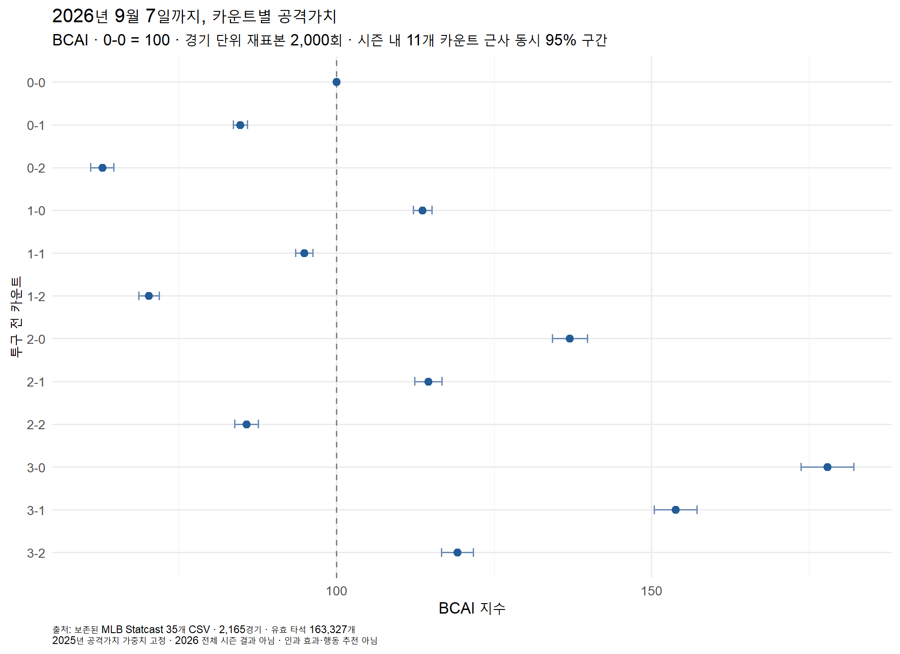
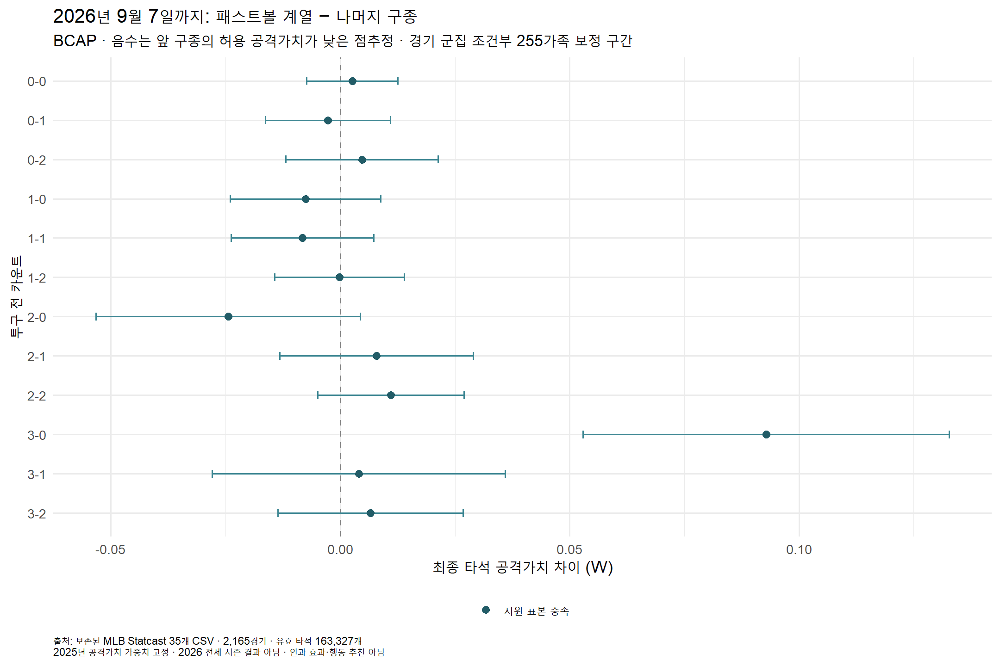
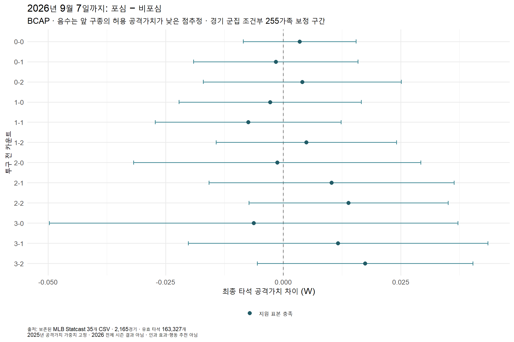

BCAI와 BCAP 구종 두 모듈 계산 완료. 2025 가중치 고정 · 전체 시즌 결과가 아닌 보조 자료입니다. S/B와 스윙은 측정 비교 문제로 보류했습니다.
원본 35개 CSV · 639,042개 투구 행 · 2,165경기 · 유효 타석 163,327개. 신규 자료 수집은 하지 않았습니다.
방법·한계·검산 보고서 · 검산 기록 · BCAI 표 · BCAP 표



관찰상 비교이며 인과 효과나 행동 추천이 아닙니다. BCAP 구간에는 전체 학습 변동·경기 간 선수 의존성이 포함되지 않습니다. 기존에 노출된 2026 자료의 재계산입니다.